-
누리의 추천!에세이 숨을 참던 나날 / 리디아 유크나비치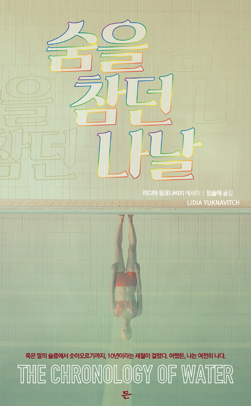숨을 참던 나날 / 리디아 유크나비치
임슬애 옮김 / 든 / 2019
누리의 추천사 날것처럼 살아있고 생생하다. 저리고 아프고 거칠지만 아름답다. 자기 자신을 발가벗겨서 보여주는 그녀가 이제는 편안한 숨을 쉬기를 바라는 마음이 드는 책이다. -
누리의 추천!한국문학 내 여자의 열매 / 한강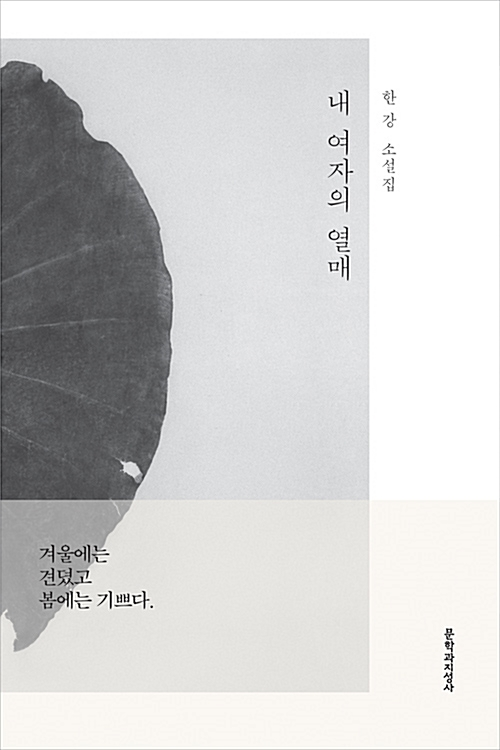내 여자의 열매 / 한강
문학과지성사 / 2018
누리의 추천사 단편으로 이루어진 이 책은 각각의 짧은 이야기를 따라가다 보면 어느새 다른 세상에 가있기도, 현실 속 이웃에게 가있기도 한다. -
켈리의 추천!경제경영 파타고니아, 파도가 칠 때는 서핑을 / 이본 쉬나드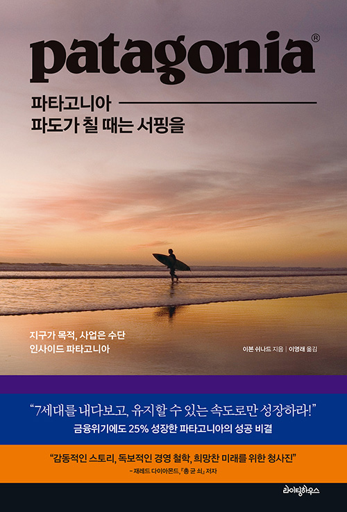파타고니아, 파도가 칠 때는 서핑을 / 이본 쉬나드
이영래 옮김 / 라이팅하우스 / 2020
켈리의 추천사 디자인을 왜 하는지, 어떻게 해야 하는지 생각해보게 하는 책입니다. -
켈리의 추천!예술 당신이 읽는 동안 / 헤라르트 윙어르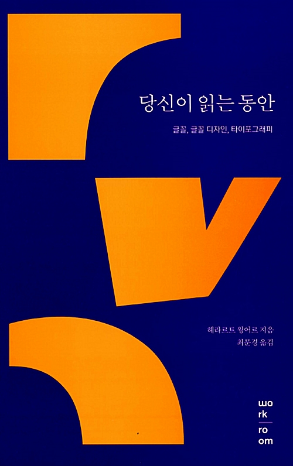당신이 읽는 동안 / 헤라르트 윙어르
최문경 옮김 / 워크룸프레스 / 2013
켈리의 추천사 타이포그라피 관련 디자이너들이 ‘읽기’라는 행위를 위해 어떤 일을 해왔는지, 할 수 있는지를 알 수 있는 책입니다. -
공리의 추천!역사 구경꾼의 탄생 / 바네사 R. 슈와르츠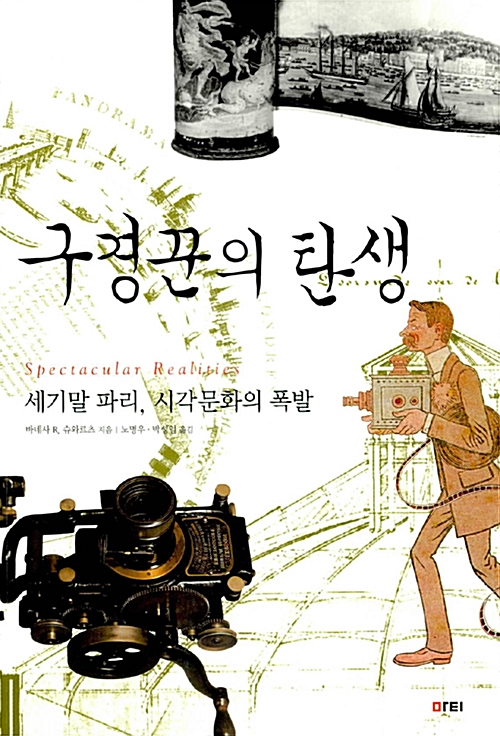구경꾼의 탄생 / 바네사 R. 슈와르츠
노명우, 박성일 옮김 / 마티 / 2006
공리의 추천사 근대 도시가 형성되며 시작된 ‘구경’을 찬미함과 동시에 / 시각예술이 미친 사회 영향을 쏙쏙 알려줍니다. -
공리의 추천!역사 광기와 우연의 역사 / 슈테판 츠바이크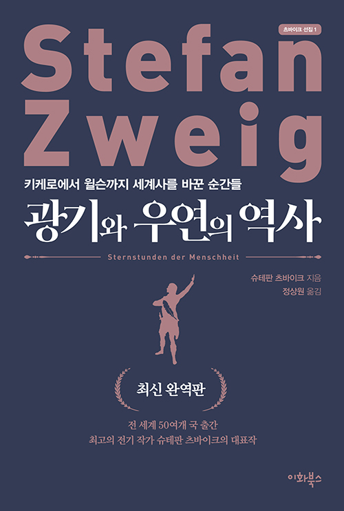광기와 우연의 역사 / 슈테판 츠바이크
정상원 옮김 / 이화북스 / 2020
공리의 추천사 워낙에 글 잘쓰는 저자가 우리가 알고 있는 위인들의 우연과 에너지를 보여줄 때 / 위인의 업적보다 문장의 재미에 빠져듭니다. -
공리의 추천!인문 고민하는 힘 / 강상중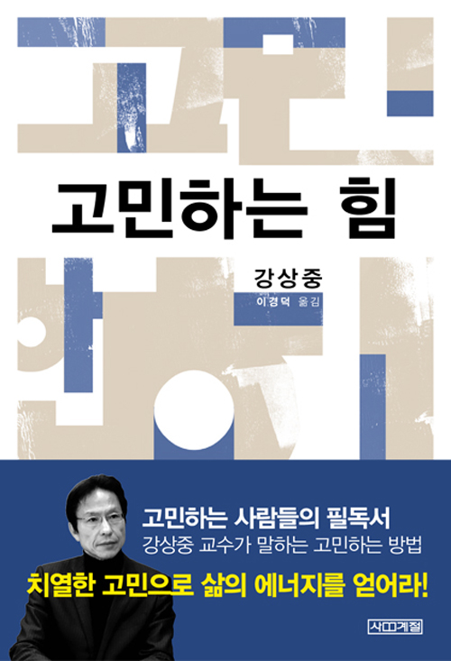고민하는 힘 / 강상중
사계절 / 2009
공리의 추천사 깊은 생각이 어쩔 때는 부담스럽고 / 도망치고 싶은 순간은 매번 찾아옵니다. 그럴 때일수록 내가 어디에 중심을 둬야할 지를 다시금 깨닫게 해주는 마법을 느낄 수 있습니다. -
곤의 추천!예술 봉인된 시간 / 안드레이 타르코프스키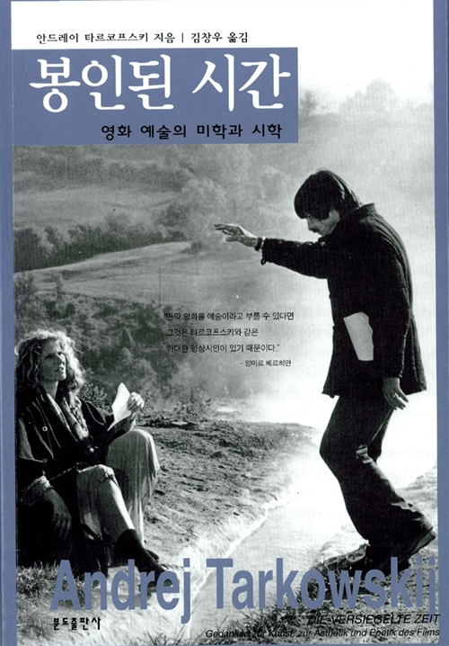봉인된 시간 / 안드레이 타르코프스키
김창우 옮김 / 분도출판사 / 2005
곤의 추천사 절판된 책이지만 / 알라딘에서 구매 가능합니다. 안드레이 타르코프스키는 1960년~80년 러시아의 위대한 영화감독입니다. 이 책은 자서전의 성격을 띄고 있지만 / 그의 예술관과 철학을 엿볼 수 있는 아주 귀한 책입니다. 책을 읽으며 그의 영화를 함께 감상하길 권합니다. -
곤의 추천!예술 시네마토그래프에 대한 단상 / 로베르 브레송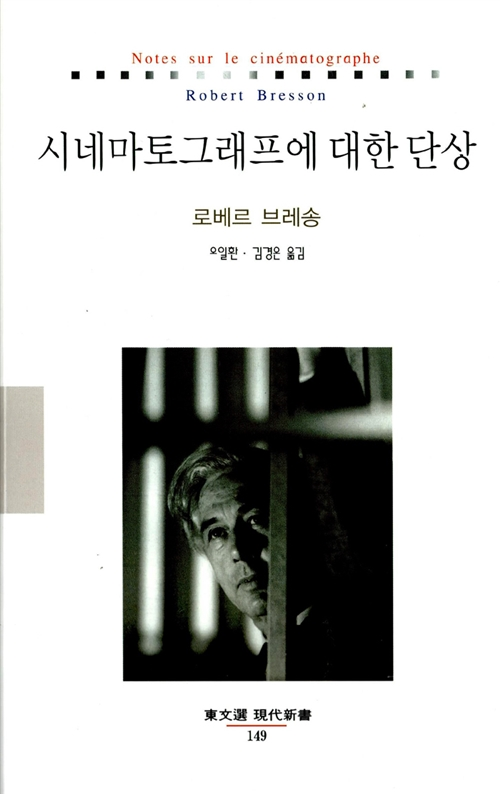시네마토그래프에 대한 단상 / 로베르 브레송
오일환 / 김경온 옮김 / 동문선 / 2003
곤의 추천사 로베르 브레송은 프랑스 영화감독이자 / 화가이기도 합니다. 브레송의 짧은 메모 같은 단상들을 묶어놓은 이 책엔 영화를 만드는 이들과 감상하는 이들 / 그리고 다른 예술 분야에 모두 유효한 의미있고 깊은 울림을 주는 말들이 담겨있습니다. -
민호의 추천!만화 7Seeds / 타무라 유미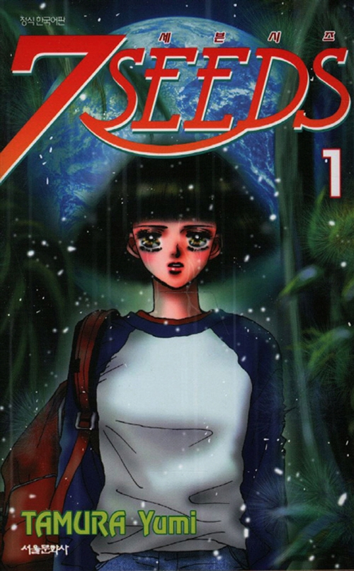7Seeds / 타무라 유미
서울미디어코믹스(서울문화사) / 2011
민호의 추천사 장편 이야기 구성의 이해. <바사라>를 그린 타무라 유미가 풀어낸 인간 절멸 후의 세상의 이야기. -
민호의 추천!만화 우리집 / 사이바라 리에코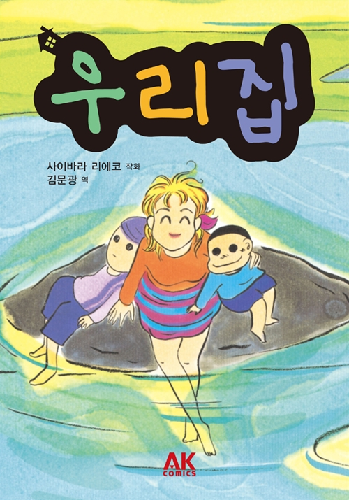우리집 / 사이바라 리에코
김문광 옮김 / AK(에이케이)커뮤니케이션즈 / 2011
민호의 추천사 절망적이고 처절한 개인사를 소재로 하지만 자기연민과 분노에 매몰되지 않고 거리두기에 성공한 이야기가 가진 힘. 그리고 그에 걸맞는 그리기 방식. -
민호의 추천!외국문학 이별 없는 세대(개정판) / 볼프강 보르헤르트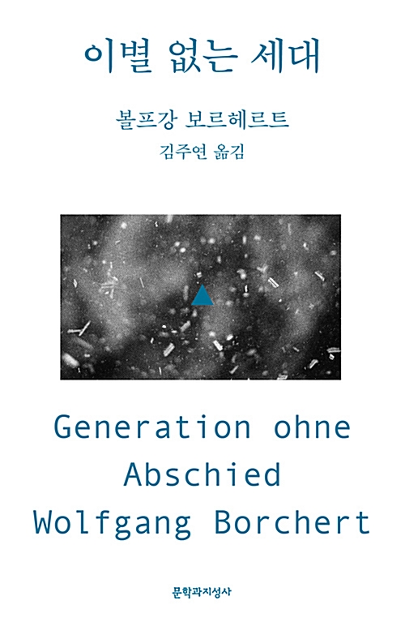이별 없는 세대(개정판) / 볼프강 보르헤르트
김주연 옮김 / 문학과 지성사 / 2018
민호의 추천사 26세 요절한 작가가 짧은 삶 속에서 경험하고 표현한 서늘한 젊음. -
하얀의 추천!예술 서양미술사 / 에른스트 H. 곰브리치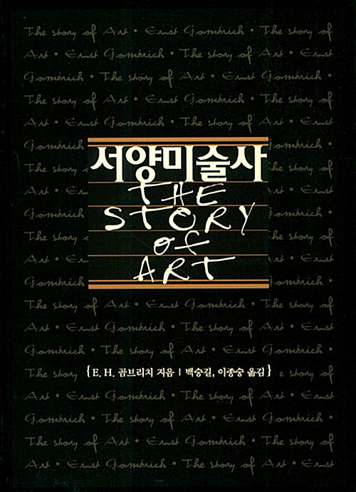서양미술사 / 에른스트 H. 곰브리치
백승길, 이종숭 옮김 / 예경 / 2003
하얀의 추천사 모르면 안되는 역사 -
부기의 추천!인문 장인 / 리처드 세넷
 장인 / 리처드 세넷
장인 / 리처드 세넷
김홍식 옮김 / 21세기 북스 / 2010
부기의 추천사 장인(생각하는 손)이라는 키워드를 통해서 삶과 일의 의미에 대해 생각해봅시다. 기술과 표현 / 장인과 예술가 / 제작자와 사용자는 나눠져있지 않다고 합니다. 이게 무슨 말이지! -
부기의 추천!만화 어시장 삼대째 / 하시모토 미츠오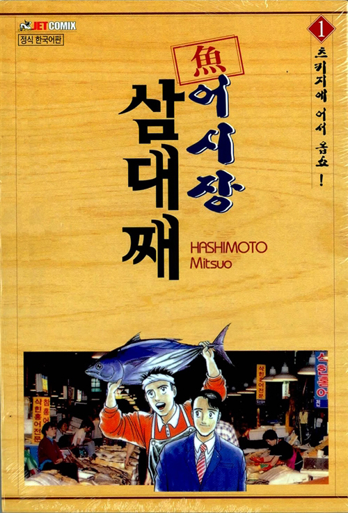어시장 삼대째 / 하시모토 미츠오
조은세상 / 2001 – 2015
부기의 추천사 주인공은 회사원 출신 어시장 중간도매상으로써 생산자와 소비자를 연결하는 일을 하고 있습니다. 스스로 물건(이야기)를 만들지 않고 유통하는 입장에서 어떻게 비즈니스 생태계를 꾸려갈까요. 맛있어 보이는 요리는 덤! -
부기의 추천!인문 약한 연결 / 아즈마 히로키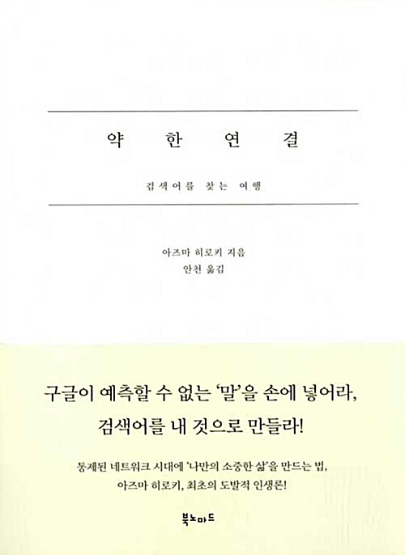약한 연결 / 아즈마 히로키
안천 옮김 / 북노마드 / 2016
부기의 추천사 인터넷 시대에 사는 우리는 스스로에게 갇히지 않기 위해 의도적으로 우연한 만남을 통해 새로운 검색어를 만들어내야합니다. 어떻게 우연한 만남을 만들어 낼 수 있을까요! -
에세이
성서의 추천!오늘의 착각 / 허수경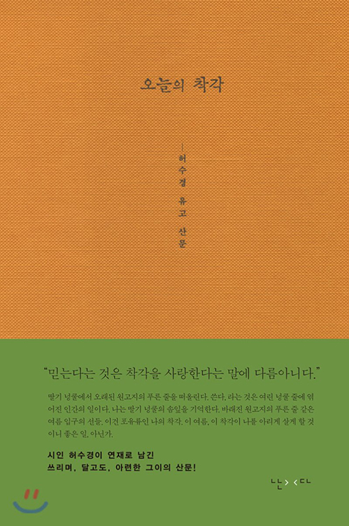오늘의 착각 / 허수경
난다 / 2020
성서의 추천사 보이지 않는 것도 구체적으로 생각할 수 있는 / 디자인과 직접 연관되어있지 않는 / 읽기 위한 책(3) : 착각이 없다면 뭐든 시작할 수 없을지도! -
자연과학
성서의 추천!싸우는 식물 / 이나가키 히데히로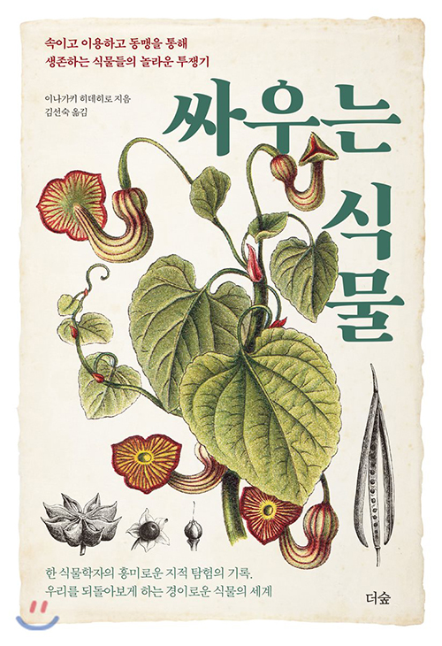싸우는 식물 / 이나가키 히데히로
더숲 / 2018
성서의 추천사 보이지 않는 것도 구체적으로 생각할 수 있는 / 디자인과 직접 연관되어있지 않는 / 읽기 위한 책(2) : 우아하고 치열한 식물의 생존법 -
인문
성서의 추천!텍스트의 포도밭 / 이반 일리치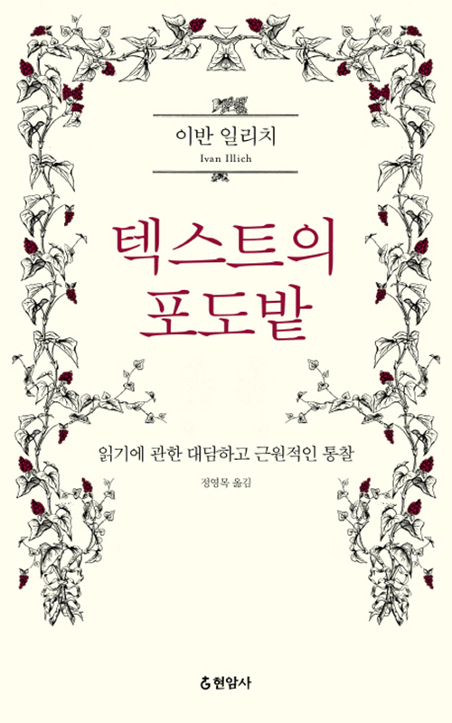텍스트의 포도밭 / 이반 일리치
정영목 옮김 / 현암사 / 2016
성서의 추천사 보이지 않는 것도 구체적으로 생각할 수 있는 / 디자인과 직접 연관되어있지 않는 / 읽기 위한 책(1) : 읽기를 굽이굽이 찾아가는 읽기
전체보기